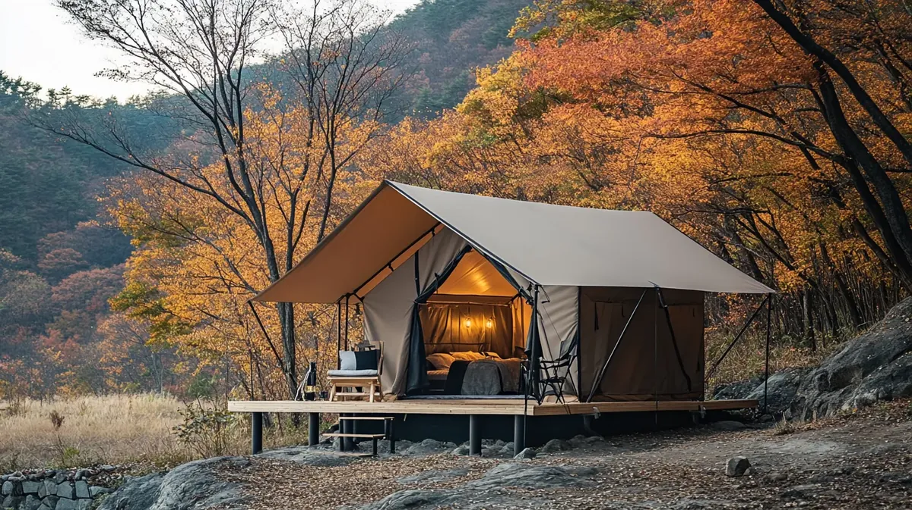

용접 없는 특허 조인트로 공기는 절반으로, 내구성은 2배로. 자체 공장 직영 생산으로 타사 대비 30% 절감. 16년 시공 전문가가 직접 설계하는 프리미엄 글램핑/어닝 시스템.

전통 건축 대비 70% 단축. 2~3주 내 운영 개시.
건축물 대비 60~80% 저렴한 투자 비용.
무용접 유니버설 조인트 특허 기반 구조.
WOCS가 당신의 비전을 실현합니다